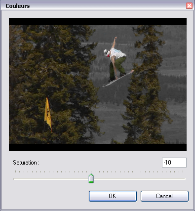
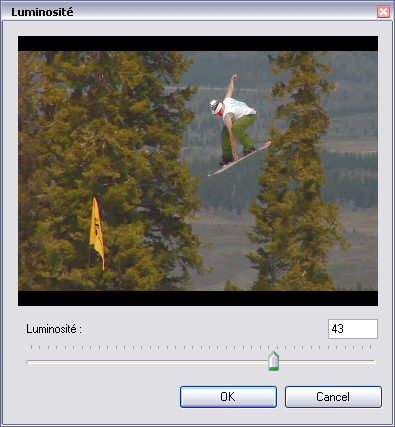
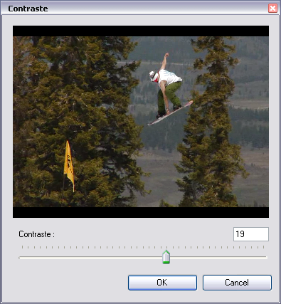

Améliorer l'Image
Lorsque les conditions de tournage ne sont pas optimales, il peut
arriver que l'image soit dégradée, teintée ou fade...
En mode Analyse (voir Décomposer la Technique) les commandes du menu Image deviennent accessibles.
Vous pouvez alors ajuster toutes les images de la vidéo et tenter d'améliorer la lisibilité du geste observé.
L'ajustement des caractéristiques suivantes est possible : Saturation des Couleurs, Luminosité, Contraste, Renforcement des Contours.
1. Couleurs
Si l'image est trop vive ou saturée, utilisez la boîte de dialogue Couleurs...

2. Luminosité
Si l'image est trop sombre ou trop exposée, utilisez la boîte de dialogue Luminosité...

3. Contraste
Si l'image parait fade ou voilée, utilisez la boîte de dialogue Contraste...

4. Renforcement des contours
Si l'image parait légèrement floue, ou mal définie utilisez la
boîte de dialogue Renforcement des Contours...